ART-0577I 固定高角度咖啡廳完整格局 Gate
Build 0577e 不變。本頁只比較概念合成，不代表正式素材、
Runtime、mapping、Save 或第二批家具獲得核准。
1. 真實 390×844：正常與編輯資訊層
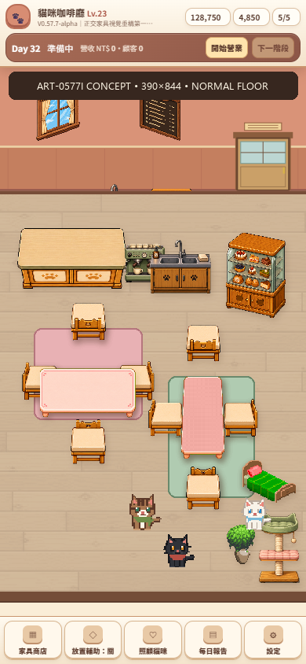
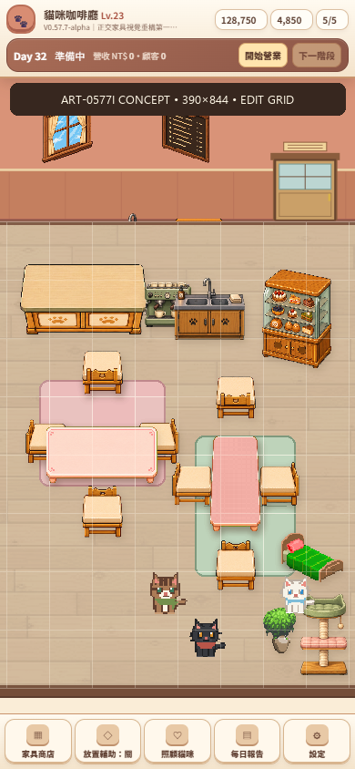
2. 構圖區域與目前版本差異
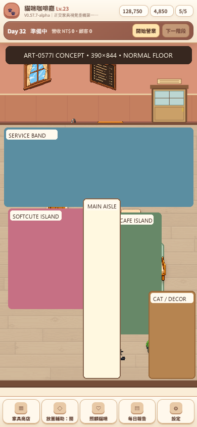
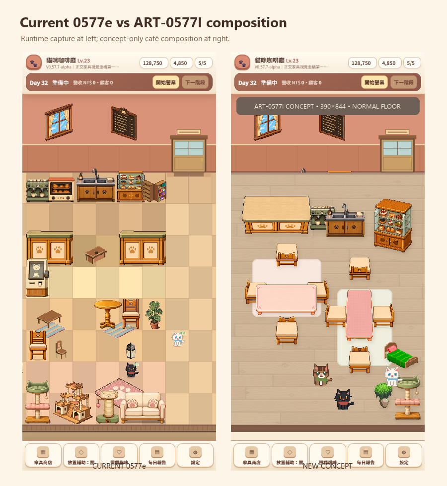
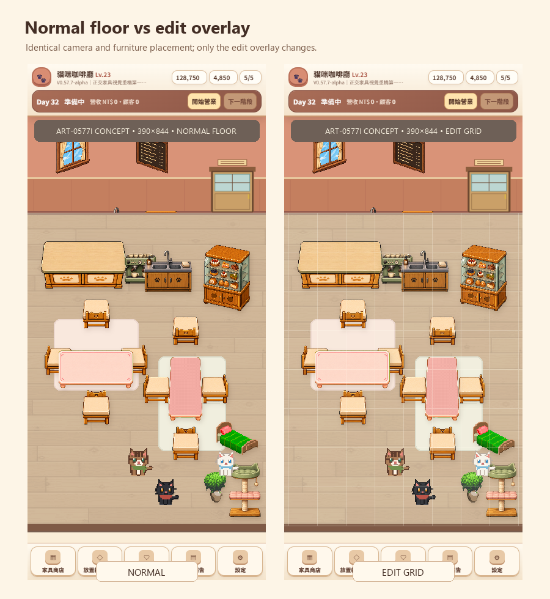
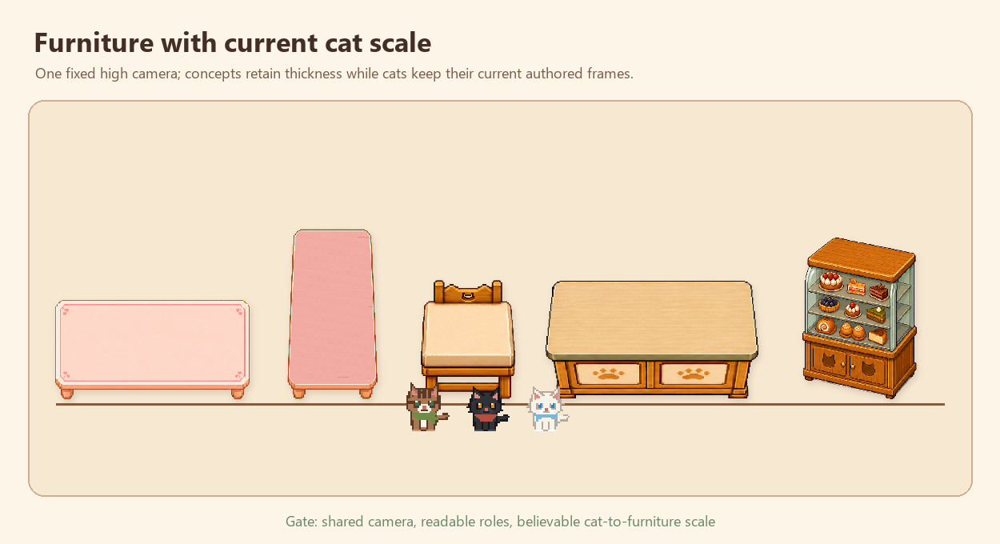
3. 空間功能近看
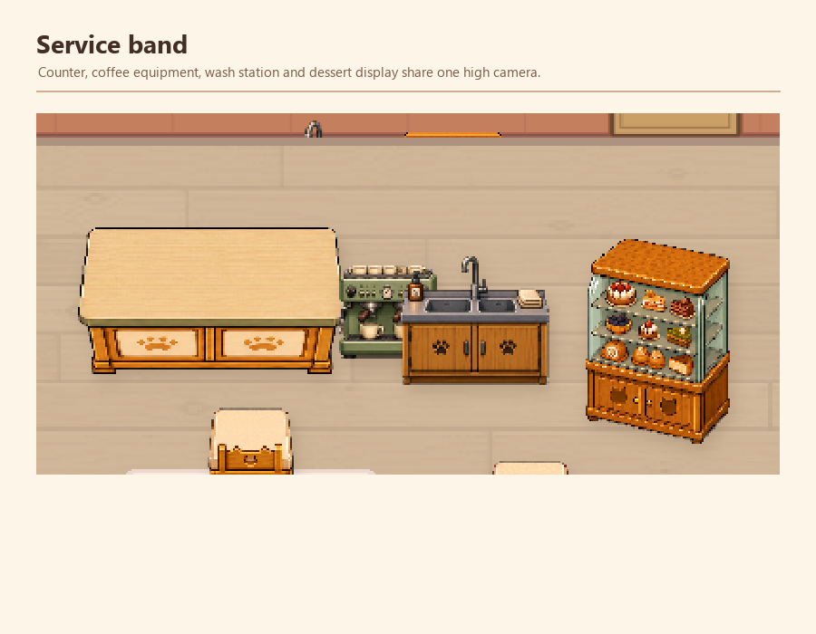
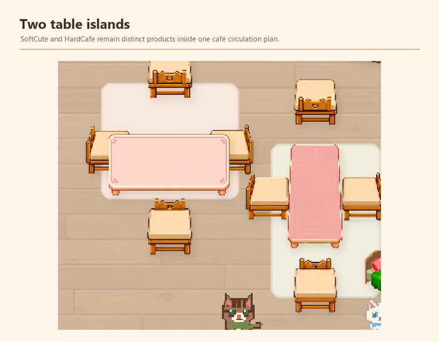
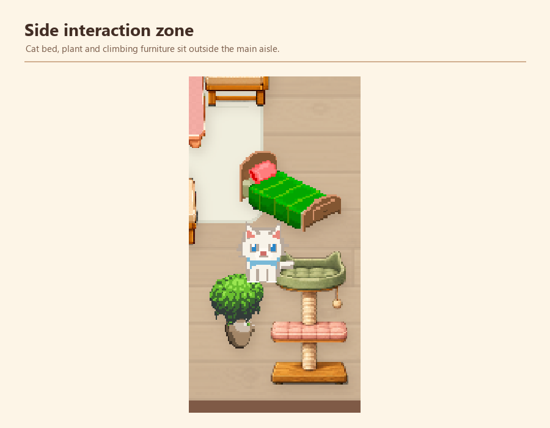
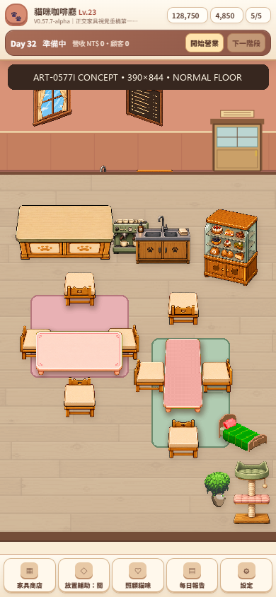
4. Product Gate 問題
- 是否已從素材測試台進入「完整咖啡廳」？
- 正常地板是否足夠安靜，編輯格線是否只在需要時提供資訊？
- SoftCute 與 HardCafe 是否能作為兩項獨立商品共同存在？
- chair 是否在真實場景中仍維持完整椅面與四方向可讀性？
- counter 左右端面、dessert 正背面是否仍需下一輪修正？
- 家具與現有貓咪是否像在同一個鏡頭與世界中？
5. 總覽
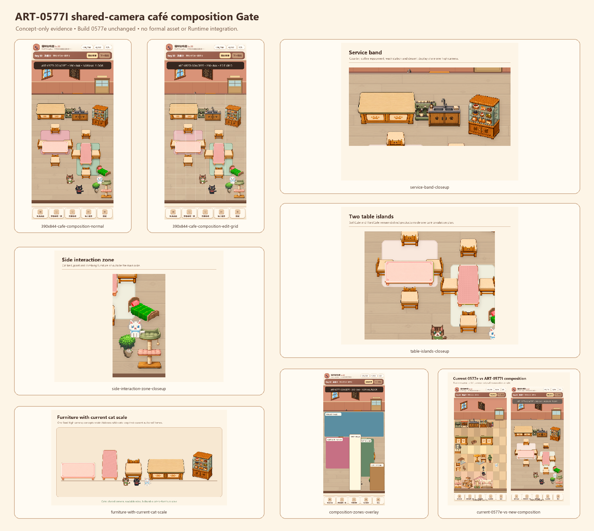